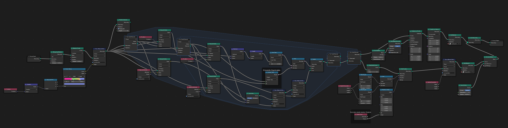

I wanted to create an effect that could take any arbitrary mesh and convert it into something that looked like an electrical schematic come to life — points of light connected by arcing, noisy lightning bolts, all wrapped in a color gradient.
The entire effect is non-destructive and works on any mesh. Swap the input model and the effect regenerates instantly.
How It Works
The pipeline is built entirely in Blender's Geometry Nodes. Here's the breakdown:
- Mesh to Point Cloud — The input mesh is converted to a point cloud, distributing points across the surface.
- Nearest-Neighbor Connections — Each point connects to its closest neighbors via splines, forming the "wiring" structure.
- Subdivide + Noise — The splines are subdivided and random noise is applied to each control point, creating the jagged lightning look.
- Cylinder Extrusion — A small cylinder profile is extruded along each spline path to create the visible geometry.
- Color Ramp — A color gradient is applied along the Z axis. Each point samples its position and stores the color as an attribute.
- Shader Hookup — In the material, the stored color attribute is extracted and piped into the emissive channel for a glowing, self-lit appearance.
The Node Graph

The geometry node setup above shows the full pipeline. The key insight is that by storing color as a point attribute during the geometry phase, you can access it later in the shader without any UV mapping — the color is baked into the geometry itself.
What I Learned
Geometry Nodes reward thinking in terms of data flow rather than traditional modeling operations. The "subdivide then displace" pattern for creating organic-looking connections between points is surprisingly versatile — the same approach could generate coral, root systems, or circuit board traces with different noise parameters.
Passing data between the geometry node tree and the shader via attributes is powerful but easy to break. Renaming an attribute on one side without updating the other produces silent failures — no errors, just missing color. A naming convention helps.
Tools
Blender 3.x, Geometry Nodes, Shader Editor